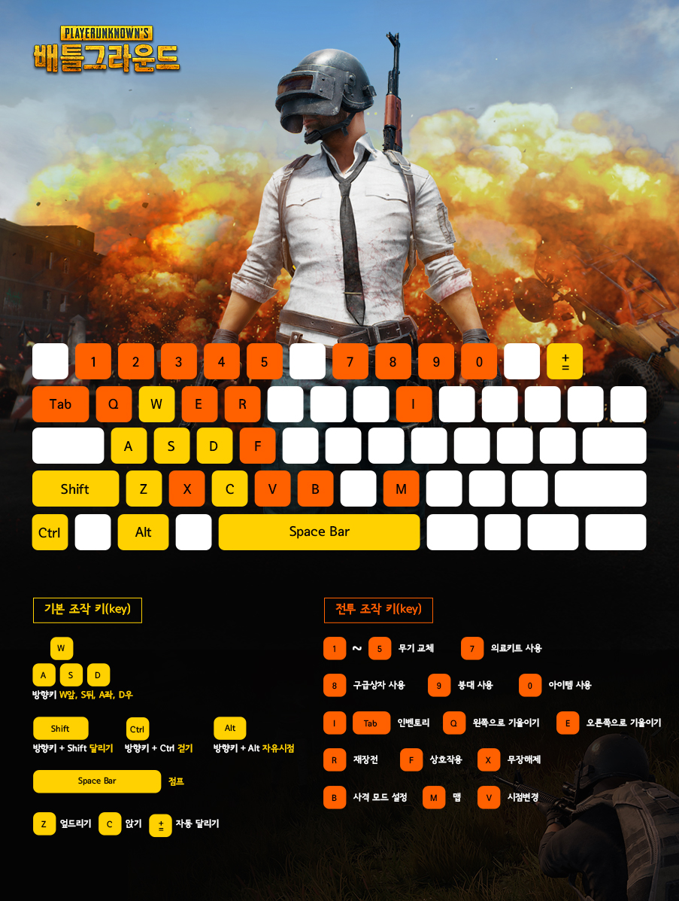

컨트롤 가이드
카카오게임 배틀그라운드 기본 조작법입니다.
조작법은 설정에서 언제든지 변경 가능합니다!
[필수조작키]

<운전 조작 키>
| 기능 | 단축키 | 기능 | 단축키 |
|---|---|---|---|
| 앞으로 이동하기 | W | 1번 좌석으로 이동 | Ctrl+1 |
| 뒤로 이동하기 | S | 2번 좌석으로 이동 | Ctrl+2 |
| 우회전 | D | 3번 좌석으로 이동 | Ctrl+3 |
| 좌회전 | A | 4번 좌석으로 이동 | Ctrl+4 |
| 공중 컨트롤 위로돌기 | 스페이스 바 | 5번 좌석으로 이동 | Ctrl+5 |
| 공중 컨트롤 아래로돌기 | 왼쪽 Ctrl | 핸드 브레이크 | 스페이스 바 |
| 공중 컨트롤 오른쪽으로 틀기 | E | 부스트 | 왼쪽 Shift |
| 공중 컨트롤 왼쪽으로 틀기 | Q | 경적 | 왼쪽 마우스버튼 |
<기타 조작 키>
| 기능 | 단축키 | 기능 | 단축키 |
|---|---|---|---|
| (수영중)위쪽으로 수영 | 스페이스 바 | 눌러서 말하기 | T |
| (수영중)아래쪽으로 수영 | C | 음성 채팅 음소거 | Ctrl+T |
| 아이템 수량 조절 | 왼쪽 Ctrl | 마스터 볼륨 음소거 | Ctrl+M |
| UI 숨기기 | Ctrl+U | (관전중)이전 플레이어 | Page Down |
| 옵션 | 0 | (관전중)다음 플레이어 | Page Up |